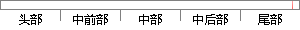

任务的管理功能除了任务的创建和调度切换外，还能进行挂起任务、恢复任务、删除任务的操作。
片段位置图

相似结果
相似片段：任务的创建、启动、运行、切换以及任务之间的通信都进行了研究,论文详细说明了任务管理的具体操作指令,这些指令是:任务创建、任务启动、任务挂起、任务恢复、任务删除...
| 标题 | 《星上嵌入式实时ACOS任务管理研究 - docin.com豆丁网》 |
| 对比库 | PaperRater云论文库 |
| 网址 | http://www.docin.com/p-204397624.html |
| 相似率 | 70.59% （轻度抄袭） |
※ 片段修改建议 ※
近似词参考：- 操作：操纵
- 恢复：规复
- 调度：调剂 调理
- 进行：举行
- 任务：使命 义务
- 除了：除
- 功能：功效
- 管理：办理 经管 治理
系统自动生成语句：使命的办理功效除使命的创建和调剂切换外，还能举行挂起使命、规复使命、删除使命的操纵。
注：本片段修改建议为系统自动生成，仅供参考。